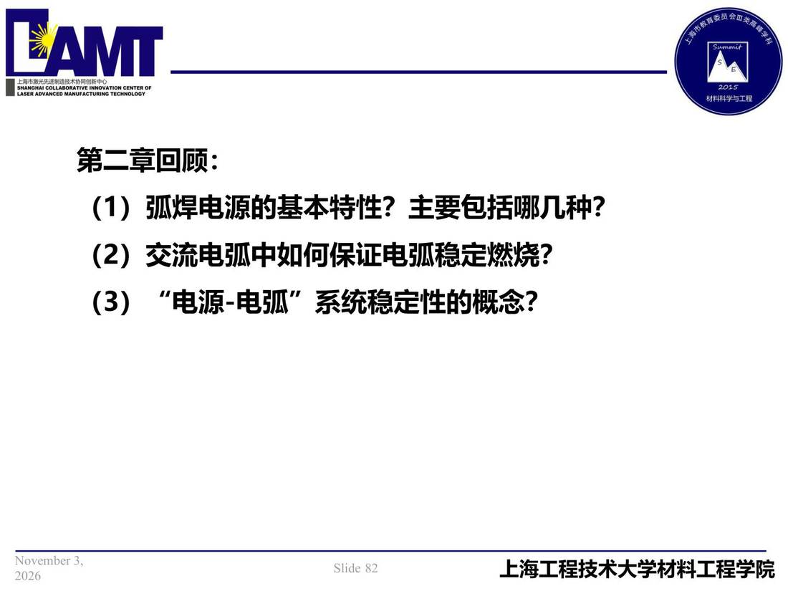

02 第2章 基本电气特性/p082 弧焊电源的基本特性？主要包括哪几种？
p082 弧焊电源的基本特性？主要包括哪几种？
📄 原文：📄 弧焊电源 课件（PDF 第 82 页）（幻灯片 82/273；PDF 第 82 页）
弧焊电源的基本特性？主要包括哪几种？

讲义原文
第二章回顾：
- 交流电弧中如何保证电弧稳定燃烧？
- “电源-电弧”系统稳定性的概念？
页面文字（OCR 机读，可能有错字，以页图为准）
第二章回顾： （1） 弧焊电源的基本特性？主要包括哪几种？ （2）交流电弧中如何保证电弧稳定燃烧？ （3）“电源-电弧”系统稳定性的概念？